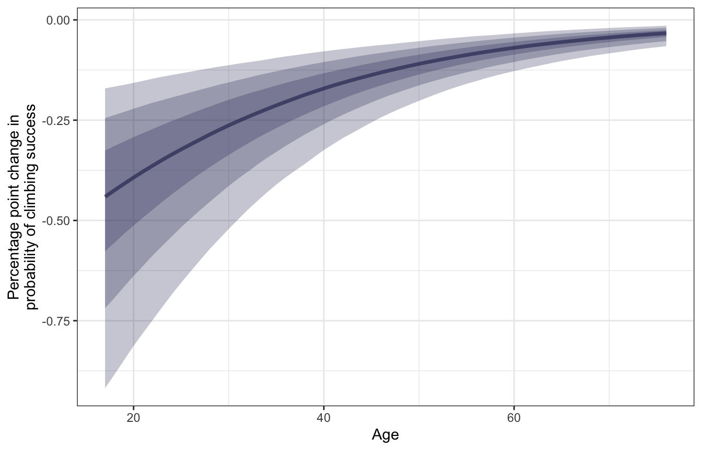
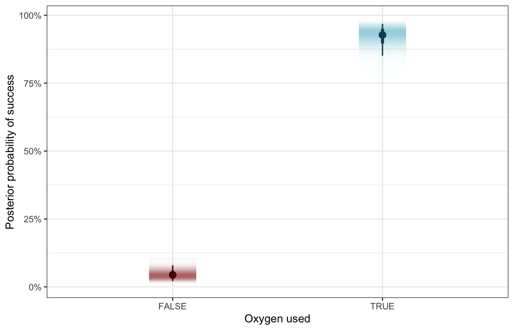

library(tidyverse)
library(brms)
library(rstanarm)
library(marginaleffects)
library(broom)
library(broom.mixed)
library(parameters)
library(tidybayes)
library(patchwork)
library(scales)
library(ggtext)
library(gghalves)
library(gt)
options(width = 100)
# tikz stuff
# Necessary for using dvisvgm on macOS
# See https://www.andrewheiss.com/blog/2021/08/27/tikz-knitr-html-svg-fun/
Sys.setenv(LIBGS = "/usr/local/share/ghostscript/9.53.3/lib/libgs.dylib.9.53")
font_opts <- list(dvisvgm.opts = "--font-format=woff")
# Plot stuff
clrs <- MetBrewer::met.brewer("Lakota", 6)
theme_set(theme_bw())
# Tell bayesplot to use the Lakota palette for things like pp_check()
# bayesplot::color_scheme_set(clrs)
# Tell bayesplot to use the viridis rocket palette for things like pp_check()
viridisLite::viridis(6, option = "rocket", end = 0.85, direction = -1) |>
# Take off the trailing "FF" in the hex codes
map_chr(~str_sub(., 1, 7)) |>
bayesplot::color_scheme_set()
# Seed stuff
set.seed(1234)
BAYES_SEED <- 1234
# Data stuff
data(climbers_sub, package = "bayesrules")
data(airbnb, package = "bayesrules")
climbers <- climbers_sub %>%
select(expedition_id, member_id, success, year, season,
age, expedition_role, oxygen_used) |>
mutate(age_c = scale(age, scale = FALSE))
airbnb <- airbnb |>
mutate(rating_c = scale(rating, scale = FALSE)) |>
mutate(neighborhood = as.character(neighborhood))
extract_attributes <- function(x) {
attributes(x) %>%
set_names(janitor::make_clean_names(names(.))) %>%
as_tibble() %>%
slice(1)
}
unscaled_climbers <- climbers %>%
select(ends_with("_c")) |>
summarize(across(everything(), ~extract_attributes(.))) |>
pivot_longer(everything()) |>
unnest(value) |>
split(~name)
unscaled_airbnb <- airbnb %>%
select(ends_with("_c")) |>
summarize(across(everything(), ~extract_attributes(.))) |>
pivot_longer(everything()) |>
unnest(value) |>
split(~name)
# Access these things like so:
# unscaled_climbers$age_c$scaled_center18: Non-normal hierarchical regression & classification
Reading notes
All this multilevel modeling stuff also works with other distributional families. This chapter covers logistic regression and Poisson regression, but the same principles apply to any distribution supported by Stan. This chapter is a lot less detailed than chapters 15, 16, and 17, which spend a ton of time on the mechanics of multilevel models. Instead, this just shows how to add multiple levels to logit and Poisson models.
18.1: Hierarchical logistic regression
The general setup
With the logistic regression example in this chapter, we want to model the probability of a successful Himalayan climbing expedition. The data we have includes details about the expedition team, the year and season of the climb, and details about the climbers themselves, like their age, their role in the expedition, and whether or not they used oxygen during the climb.
Most climbers were unsuccessful and did not make it to the summit:
climbers |>
count(success) |>
mutate(prop = n / sum(n))
## # A tibble: 2 × 3
## success n prop
## <lgl> <int> <dbl>
## 1 FALSE 1269 0.611
## 2 TRUE 807 0.389These climbers never climb on their own. They always go in groups ranging from 5 to 44 people, and teams do not always unanimously finish together:
climbers_expeditions <- climbers |>
group_by(expedition_id) |>
summarize(n = n(), prop_success = mean(success))
p1 <- climbers_expeditions |>
ggplot(aes(x = n, y = prop_success)) +
geom_count(alpha = 0.8, color = clrs[5]) +
scale_size_area(max_size = 8, breaks = c(1, 5, 10)) +
labs(x = "Expedition team size",
y = "Proportion of expedition team that finished",
size = "Number of\nexpeditions")
p2 <- climbers_expeditions |>
ggplot(aes(x = prop_success)) +
geom_histogram(binwidth = 0.05, center = 0, color = "white", fill = clrs[5]) +
labs(x = "Proportion of expedition team that finished", y = "Count")
p1 + p2We thus have a hierarchical/multilevel structure that looks like this, with climbers \(y_i\) nested in expedition teams \(j\):

Model building
In this example, we want to model whether an individual climber successfully reaches the summit. This is a binary outcome: 1 if yes, 0 if no. It’s also an individual outcome, nested in groups, so it has subscripts:
\[ \text{Success}_{i_j} = \begin{cases} 1 & \text{Yes} \\ 0 & \text{No} \\ \end{cases} \]
In the book they use two covariates to explain climbing success:
- \(X_{i_{j}1}\) or \(\text{Age}_{i_j}\): Age of climber \(i\) in expedition \(j\)
- \(X_{i_{j}2}\) or \(\text{Oxygen}_{i_j}\): Whether climber \(i\) in expedition \(j\) used oxygen
…so we’ll do that here too. At first glance, it doesn’t look like age makes much of a difference in the probability of success, but oxygen use matters a lot. Almost all of the successful climbers used oxygen; only a handful of oxygen-users were unsuccessful:
climbers |>
ggplot(aes(x = age, y = success, color = oxygen_used)) +
geom_dots(aes(side = ifelse(success == TRUE, "bottom", "top")),
pch = 19, scale = 0.6) +
scale_y_discrete(expand = expansion(mult = 0.1)) +
scale_color_manual(values = c(clrs[3], clrs[1])) +
labs(x = "Age", y = "Success", color = "Oxygen used")Instead of building up this model step-by-step like in previous chapters, we’ll just define it all at once here:
\[ \begin{aligned} \text{Success}_{i_j} &\sim \operatorname{Bernoulli}(\pi_{i_j}) & \text{Probability of success for climber}_i \text{ in team}_j \\ \operatorname{logit}(\pi_{i_j}) &= \beta_{0_j} + \beta_1\, \text{Age}_{i_j} + \beta_2\, \text{Oxygen}_{i_j} & \text{Model for probability} \\ \beta_{0_j} &\sim \mathcal{N}(\beta_0, \sigma_0) & \text{Team-specific intercepts, or baseline probabilities} \\ \\ \beta_{0_c} &\sim \mathcal{N}(0, 2.5) & \text{Prior for global average success rate} \\ \beta_1 &\sim \mathcal{N}(0, 2.5) & \text{Prior for global age effect, holding oxygen constant} \\ \beta_2 &\sim \mathcal{N}(0, 2.5) & \text{Prior for global oxygen effect, holding age constant} \\ \sigma_0 &\sim \operatorname{Exponential}(1) & \text{Prior for between-team variability} \end{aligned} \]
Or with offset-based notation:
\[ \begin{aligned} \text{Success}_{i_j} &\sim \operatorname{Bernoulli}(\pi_{i_j}) & \text{Probability of success for climber}_i \text{ in team}_j \\ \operatorname{logit}(\pi_{i_j}) &= (\beta_0 + b_{0_j}) + \beta_1\, \text{Age}_{i_j} + \beta_2\, \text{Oxygen}_{i_j} & \text{Model for probability} \\ b_{0_j} &\sim \mathcal{N}(0, \sigma_0) & \text{Team-specific offsets from global success rate} \\ \\ \beta_{0_c} &\sim \mathcal{N}(0, 2.5) & \text{Prior for global average success rate} \\ \beta_1 &\sim \mathcal{N}(0, 2.5) & \text{Prior for global age effect, holding oxygen constant} \\ \beta_2 &\sim \mathcal{N}(0, 2.5) & \text{Prior for global oxygen effect, holding age constant} \\ \sigma_0 &\sim \operatorname{Exponential}(1) & \text{Prior for between-team variability} \end{aligned} \]
Posterior simulation and analysis
We can run this model by including (1 | expedition_id) for the random team intercepts:
priors <- c(prior(normal(0, 2.5), class = Intercept),
prior(normal(0, 2.5), class = b),
prior(exponential(1), class = sd))
model_success_brms <- brm(
bf(success ~ age_c + oxygen_used + (1 | expedition_id)),
data = climbers,
family = bernoulli(link = "logit"),
prior = priors,
chains = 4, cores = 4, iter = 4000, threads = threading(2), seed = BAYES_SEED,
backend = "cmdstanr", refresh = 0,
file = "18-manual_cache/success-brms"
)We’ll keep the autoscaled priors here because rstan complains about init issues otherwise?
model_success_rstanarm <- stan_glmer(
success ~ age_c + oxygen_used + (1 | expedition_id),
data = climbers, family = binomial,
prior_intercept = normal(0, 2.5, autoscale = TRUE),
prior = normal(0, 2.5, autoscale = TRUE),
prior_covariance = decov(reg = 1, conc = 1, shape = 1, scale = 1),
chains = 4, cores = 4, iter = 5000*2, seed = 84735, refresh = 0)Global analysis
First we’ll look at what this model says about a typical climber, which involves the \(\beta_0\), \(\beta_1\), and \(\beta_2\) terms:
model_success_brms |>
tidy(effects = c("fixed"), conf.level = 0.8) |>
select(-component)
## # A tibble: 3 × 6
## effect term estimate std.error conf.low conf.high
## <chr> <chr> <dbl> <dbl> <dbl> <dbl>
## 1 fixed (Intercept) -3.09 0.349 -3.54 -2.65
## 2 fixed age_c -0.0473 0.00913 -0.0589 -0.0358
## 3 fixed oxygen_usedTRUE 5.65 0.457 5.08 6.25Odds ratio-scale coefficients:
# There's a tiny bug in broom.mixed when exponentiating, so we'll use
# parameters::model_parameters() instead
model_success_brms %>%
model_parameters(centrality = "mean", dispersion = TRUE,
test = FALSE, verbose = FALSE, ci_method = "hdi", ci = 0.8,
exponentiate = TRUE)
## Parameter | Mean | SD | 80% CI | Rhat | ESS
## ------------------------------------------------------------------------
## (Intercept) | 0.05 | 0.35 | [ 0.03, 0.07] | 1.003 | 1359.00
## age_c | 0.95 | 9.13e-03 | [ 0.94, 0.96] | 1.000 | 7270.00
## oxygen_usedTRUE | 284.45 | 0.46 | [157.94, 500.89] | 1.002 | 2508.00model_success_brms |>
gather_draws(`^b_.*`, regex = TRUE) |>
ungroup() |>
mutate(.value = exp(.value),
.variable = fct_inorder(.variable)) |>
ggplot(aes(x = .value, fill = .variable)) +
stat_halfeye(normalize = "xy") +
scale_fill_manual(values = c(clrs[5], clrs[4], clrs[6]), guide = "none") +
facet_wrap(vars(.variable), scales = "free_x")
model_success_rstanarm |>
tidy(effects = c("fixed"),
conf.int = TRUE, conf.level = 0.8)
## # A tibble: 3 × 5
## term estimate std.error conf.low conf.high
## <chr> <dbl> <dbl> <dbl> <dbl>
## 1 (Intercept) -3.16 0.355 -3.63 -2.72
## 2 age_c -0.0475 0.00922 -0.0593 -0.0358
## 3 oxygen_usedTRUE 5.79 0.474 5.20 6.43# There's a tiny bug in broom.mixed when exponentiating, so we'll use
# parameters::model_parameters() instead
model_success_rstanarm %>%
model_parameters(centrality = "mean", dispersion = TRUE, prior = FALSE,
test = FALSE, verbose = FALSE, ci_method = "hdi", ci = 0.8,
exponentiate = TRUE)
## Parameter | Mean | SD | 80% CI | Rhat | ESS
## -------------------------------------------------------------------------
## (Intercept) | 0.04 | 0.36 | [ 0.03, 0.07] | 1.001 | 3980.00
## age_c | 0.95 | 9.21e-03 | [ 0.94, 0.96] | 1.000 | 26332.00
## oxygen_usedTRUE | 332.40 | 0.48 | [180.00, 608.64] | 1.001 | 8012.00model_success_rstanarm |>
gather_draws(`(Intercept)`, age_c, oxygen_usedTRUE) |>
ungroup() |>
mutate(.value = exp(.value),
.variable = fct_inorder(.variable)) |>
ggplot(aes(x = .value, fill = .variable)) +
stat_halfeye(normalize = "xy") +
scale_fill_manual(values = c(clrs[5], clrs[4], clrs[6]), guide = "none") +
facet_wrap(vars(.variable), scales = "free_x")Here’s how to interpret all these coefficients, using the brms results:
Intercept (\(\beta_0\))
The posterior mean for \(\beta_0\) is -3.09, but that’s weird and on the logit scale. We can convert this to the probability scale with \(\frac{e^{-3.09}}{1 + e^{-3.09}}\) or with plogis(), which is 0.043. This means that the posterior mean probability of success for a climber of average age (36.96 years) and when not using oxygen is 4.3%, and there’s an 80% chance it’s between 2.8% and 6.6%.
Age (\(\beta_1\))
The posterior mean for \(\beta_1\) is -0.047, but that’s also weird and logit-ed. We can exponentiate it (\(e^{-0.047}\)) and get a mean posterior odds ratio of 0.954, with an 80% credible interval of 0.943–0.965). A one-year increase in a typical climber’s age makes climbing success 4.6% less likely (with an 80% credible interval of 3.5%–5.7%).
We can also convert these results to a much more manageable probability scale, but that’s a little trickier now that we’re working with multiple covariates. We can’t just do this, since we also have a b2 to deal with:
plogis(b0 + b1) - plogis(b0)Instead, we can use the magical marginaleffects package to get probability-scale estimates. First we’ll plot the predicted probabilities of success as age increases, holding oxygen use constant (as a no). Note that we include re_formula = NA to omit any random effects—this only uses the global parameters:
# Fast automatic version:
# plot_cap(model_success_brms, condition = "age_c", re_formula = NA)
datagrid(model = model_success_brms,
age_c = seq(17, 76, by = 1) - unscaled_climbers$age_c$scaled_center) |>
add_epred_draws(model_success_brms, re_formula = NA) |>
mutate(age = age_c + unscaled_climbers$age_c$scaled_center) |>
ggplot(aes(x = age, y = .epred)) +
stat_lineribbon(color = clrs[3], fill = clrs[3], alpha = 0.35) +
scale_y_continuous(labels = label_percent()) +
labs(x = "Age", y = "Posterior probability of success")
Successful expeditions are most likely among younger climbers, and as a typical climber ages, the probability of success decreases. We can get exact estimates of the slope of this posterior with marginaleffects().
mfx_success <- model_success_brms |>
marginaleffects(newdata = datagrid(age_c = seq(17, 76, by = 1) -
unscaled_climbers$age_c$scaled_center),
variables = "age_c",
type = "response", re_formula = NA) |>
posteriordraws() |>
mutate(age = age_c + unscaled_climbers$age_c$scaled_center)
mfx_success |>
ggplot(aes(x = age, y = draw * 100)) +
stat_lineribbon(alpha = 0.25, fill = clrs[6], color = clrs[6]) +
labs(x = "Age",
y = "Percentage point change in\nprobability of climbing success")
We can pick out the slope at a few of these different ages:
mfx_success |>
filter(age %in% c(18, 40, 60)) |>
group_by(age) |>
summarize(mean_slope = mean(draw),
conf.low = mean(conf.low),
conf.high = mean(conf.high)) |>
mutate(across(c(mean_slope, conf.low, conf.high), ~ . * 100))
## # A tibble: 3 × 4
## age mean_slope conf.low conf.high
## <dbl> <dbl> <dbl> <dbl>
## 1 18 -0.449 -0.884 -0.166
## 2 40 -0.179 -0.324 -0.0784
## 3 60 -0.0723 -0.128 -0.0336For a typical young climber (18 years old), a one-year increase in age is associated with a posterior mean -0.449 percentage point decrease in the probability of success. That’s a sizable drop! For a typical middle-aged climber (40 years old), getting older is associated with a smaller -0.179 percentage point drop in probability, while older climbers (60 years old) see an even smaller -0.072 percentage point decline. Age thus seems to matter the most for younger climbers—it doesn’t have an effect on the typical older climber.
Oxygen (\(\beta_2\))
The posterior mean for \(\beta_2\) is 5.651 in the log odds world. Exponentiating it (\(e^{5.651}\)) gives us a massive mean posterior odds ratio of 284.446, with an 80% credible interval of 160.629–515.843). Holding age constant, oxygen use in a typical climber increases the odds of success by 161–516 times! Wild!
Let’s translate this to probabilities. Holy crap there’s a massive difference the probability of success:
datagrid(model = model_success_brms,
oxygen_used = c(TRUE, FALSE)) |>
add_epred_draws(model_success_brms, re_formula = NA) |>
ggplot(aes(x = oxygen_used, y = .epred, fill = oxygen_used, color = oxygen_used)) +
stat_gradientinterval(width = 0.25) +
scale_y_continuous(labels = label_percent()) +
scale_fill_manual(values = c(clrs[3], clrs[1]), guide = "none") +
scale_color_manual(values = colorspace::darken(c(clrs[3], clrs[1]), 0.5), guide = "none") +
labs(x = "Oxygen used", y = "Posterior probability of success")
To calculate the exact difference we could just use the results from add_epred_draws() and do some dplyr group_by() and summarize() and subtraction work, or we can use tidybayes’s compare_levels() to do the same thing. This is a marginal effect at user-specified values.
datagrid(model = model_success_brms,
oxygen_used = c(TRUE, FALSE)) |>
add_epred_draws(model_success_brms, re_formula = NA) |>
compare_levels(variable = .epred, by = oxygen_used) |>
ggplot(aes(x = .epred * 100)) +
stat_halfeye(fill = clrs[4]) +
labs(x = "Difference in probability of success due to oxygen use\n(Percentage points)",
y = "Density")Alternatively, we can use marginaleffects::comparisons() to calculate actual average marginal effects (or rather, group contrasts, since strictly speaking, marginal effects are partial derivatives). Instead of feeding the model a single average value for age, we’ll plug in each original row of the data into the model and get one contrast per row.
mfx_cmp_success <- model_success_brms |>
comparisons(variables = "oxygen_used", re_formula = NA)nrow(mfx_cmp_success)
## [1] 2076
nrow(climbers)
## [1] 2076mfx_cmp_success |>
posteriordraws() |>
group_by(drawid) |>
summarize(draw = mean(draw)) |>
ggplot(aes(x = draw * 100)) +
stat_halfeye(fill = clrs[2]) +
labs(x = "Difference in probability of success due to oxygen use\n(Percentage points)",
y = "Density")For even more bonus fun, we can actually do something new with marginaleffects and integrate out the random effects (see this too for an example). So far, we’ve been using re_formula = NA to ignore the expedition team effects entirely. If we use re_formula = NULL to include them, we either have to (1) specify one specific expedition team ID, or (2) invent a new hypothetical team that’s based on the the global average. Alternatively, we can create a bunch of new hypothetical teams (like 100) and calculate either the marginal effects or contrasts for each coefficient in those hypothetical teams, then take the average (see this vignette for brmsmargins for more details). Fortunately marginalffects can handle all this for us:
mfx_success_integrated_out <- comparisons(
model_success_brms,
# 100 fake expedition IDs
newdata = datagrid(expedition_id = -1:-100),
allow_new_levels = TRUE,
sample_new_levels = "gaussian")mfx_success_integrated_out |> summary()
## Term Contrast Effect 2.5 % 97.5 %
## 1 age_c (x + 1) - x -0.004151 -0.09081 0.08254
## 2 oxygen_used TRUE - FALSE 0.520871 0.39713 0.62711
##
## Model type: brmsfit
## Prediction type: responsemfx_success_integrated_out |>
posteriordraws() |>
group_by(drawid, term) |>
summarize(draw = mean(draw)) |>
mutate(term = recode(term, age_c = "Age", oxygen_used = "Oxygen used")) |>
ggplot(aes(x = draw * 100, fill = term)) +
stat_halfeye() +
facet_wrap(vars(term), scales = "free_x") +
scale_fill_manual(values = c(clrs[1], clrs[5]), guide = "none") +
labs(title = "Average marginal effect of coefficients",
subtitle = "Random effects integrated out",
x = "Percentage point change in probability of success", y = "Density")
Age and oxygen at the same time
For fun, here’s what the effect of both age and oxygen look like simultaneously:
datagrid(model = model_success_brms,
oxygen_used = c(TRUE, FALSE),
age_c = seq(17, 76, by = 1) - unscaled_climbers$age_c$scaled_center) |>
add_epred_draws(model_success_brms, re_formula = NA, ndraws = 100) |>
mutate(age = age_c + unscaled_climbers$age_c$scaled_center) |>
ggplot(aes(x = age, y = .epred, color = oxygen_used)) +
geom_line(aes(group = paste(oxygen_used, .draw)), alpha = 0.35) +
scale_y_continuous(labels = label_percent()) +
scale_color_manual(values = c(clrs[3], clrs[1])) +
labs(x = "Age", y = "Posterior probability of success",
color = "Oxygen used")Team-specific analysis
Next we can look at the team-specific details, or the offsets from the baseline probability of success:
\[ B_0 + b_{0_j} \]
There’s a surprising amount of variation in success across teams here. Some have a predicted 97% baseline chance of success; others have practically no baseline chance of success. Here are the top 5 and bottom 5 as an example:
team_baselines <- model_success_brms |>
epred_draws(tibble(expedition_id = unique(climbers$expedition_id),
age_c = 0, oxygen_used = FALSE)) |>
ungroup() |>
mutate(expedition_id = fct_reorder(factor(expedition_id), .epred, .fun = mean))
team_baselines |>
group_by(expedition_id) |>
summarize(avg = mean(.epred)) |>
arrange(desc(avg)) |>
slice(1:5, 196:200)
## # A tibble: 10 × 2
## expedition_id avg
## <fct> <dbl>
## 1 TUKU16301 0.965
## 2 SPHN93101 0.950
## 3 MANA84101 0.942
## 4 AMAD11321 0.931
## 5 AMAD98311 0.926
## 6 MANA82401 0.000651
## 7 MAKA08112 0.000606
## 8 EVER07194 0.000402
## 9 MANA08324 0.000365
## 10 EVER19112 0.000112And for bonus fun, here are all 200 teams simultaneously:
global_baseline <- model_success_brms |>
tidy(effects = c("fixed"), conf.level = 0.8) |>
filter(term == "(Intercept)") |>
mutate(across(c(estimate, conf.low, conf.high), plogis))
team_baselines |>
ggplot(aes(x = .epred, y = expedition_id)) +
annotate(geom = "rect", ymin = -Inf, ymax = Inf,
xmin = global_baseline$conf.low, xmax = global_baseline$conf.high,
fill = clrs[2], alpha = 0.4) +
geom_vline(xintercept = global_baseline$estimate, color = clrs[2]) +
stat_pointinterval(color = clrs[3], size = 0.1,
point_interval = "mean_qi") +
scale_x_continuous(labels = label_percent()) +
labs(x = "Baseline probability of success", y = "Expedition team ID",
title = "Baseline probability of expedition team success",
subtitle = "Global baseline and 80% credible interval shown in yellow") +
theme(axis.text.y = element_blank(), axis.ticks.y = element_blank(),
panel.grid.major.y = element_blank())
We can also look at how these team-specific offsets influence the age-success relationship. Here we’ll plot three arbitrarily chosen teams (I just scrolled through the list and picked at random). All the model does here is shift the baseline intercept around—the slope is the same in all three panels (but looks difference because of logit slopes are nonlinear and weird).
climbers_small <- climbers |>
filter(expedition_id %in% c("AMAD81101", "AMAD03107", "EVER07194"))
climbers_small |>
add_epred_draws(model_success_brms, ndraws = 250) |>
ggplot(aes(x = age, y = as.numeric(success))) +
geom_line(aes(y = .epred, group = paste(expedition_id, .draw),
color = expedition_id),
alpha = 0.2, size = 0.3) +
geom_point(data = climbers_small, aes(color = expedition_id)) +
scale_color_manual(values = c(clrs[1], clrs[2], clrs[5]), guide = "none") +
facet_wrap(vars(expedition_id)) +
labs(x = "Age", y = "Posterior probability of success")Between-team variability
With linear regression in chapter 17, we had two forms of variability:
- \(\sigma_y\) for the variability within units nested in groups (i.e. the scale term in \(Y_{i_j} \sim \mathcal{N}(\mu_{i_j}, \sigma_{i_j})\))
- \(\sigma_0\) for the variability between groups (i.e. the variation around the random offsets in \(b_{0_j} \sim \mathcal{N}(0, \sigma_0)\))
In logistic regression with a Bernoulli model for \(Y\), we don’t have a corresponding \(\sigma_y\) term for variability within expedition teams. We do have a \(\sigma_0\) term for variability between teams, so we can look at that:
model_success_brms |>
tidy(effects = c("ran_pars"), conf.level = 0.8) |>
select(-component)
## # A tibble: 1 × 7
## effect group term estimate std.error conf.low conf.high
## <chr> <chr> <chr> <dbl> <dbl> <dbl> <dbl>
## 1 ran_pars expedition_id sd__(Intercept) 3.57 0.337 3.16 4.02model_success_rstanarm |>
tidy(effects = c("ran_pars"),
conf.int = TRUE, conf.level = 0.8)
## # A tibble: 1 × 3
## term group estimate
## <chr> <chr> <dbl>
## 1 sd_(Intercept).expedition_id expedition_id 3.63\(\sigma_0\) (or sd__(Intercept) for the expedition_id group) is 3.57, which is the amount of variance in the log odds of the global intercept, so the average baseline log odds of success varies between teams with a standard deviation of 3.57 logits/log odds. We can see this if we look at all the team-specific intercepts on the log odds scale. The global average is -3.09, marked in yellow, and there’s a ton of variation around that average—a standard deviation of 3.57.
According to Isabella Ghement, the “sd(Intercept) term is a quantification of sorts of how ‘similar’ the intercepts for different [teams] … are”. If it’s a big value, the teams aren’t super similar; if it’s small, the teams are pretty similar. These teams are not similar at all.
team_baselines_logit <- model_success_brms |>
linpred_draws(tibble(expedition_id = unique(climbers$expedition_id),
age_c = 0, oxygen_used = FALSE)) |>
ungroup() |>
mutate(expedition_id = fct_reorder(factor(expedition_id), .linpred, .fun = mean))
global_baseline_logit <- model_success_brms |>
tidy(effects = c("fixed"), conf.level = 0.8) |>
filter(term == "(Intercept)")
team_baselines_logit |>
ggplot(aes(x = .linpred, y = expedition_id)) +
annotate(geom = "rect", ymin = -Inf, ymax = Inf,
xmin = global_baseline_logit$conf.low, xmax = global_baseline_logit$conf.high,
fill = clrs[2], alpha = 0.4) +
geom_vline(xintercept = global_baseline_logit$estimate, color = clrs[2]) +
stat_pointinterval(color = clrs[6], size = 0.1,
point_interval = "mean_qi") +
labs(x = "Baseline log odds", y = "Expedition team ID") +
theme(axis.text.y = element_blank(), axis.ticks.y = element_blank(),
panel.grid.major.y = element_blank())
To make this more interpretable, according to Isabella Ghement (and others in that super helpful Twitter thread), we can unlogit this with plogis(Intercept ± 2*sd(Intercept)). This gives us a massive range in probability land!
model_success_brms |>
tidy(effects = c("fixed", "ran_pars")) |>
filter(str_detect(term, "Intercept")) |>
select(term, estimate) |>
mutate(term = janitor::make_clean_names(term)) |>
pivot_wider(names_from = term, values_from = estimate) |>
mutate(range_low = plogis(intercept - (2 * sd_intercept)),
range_high = plogis(intercept + (2 * sd_intercept))) |>
mutate(across(starts_with("range"), ~label_percent(accuracy = 0.01)(.)))
## # A tibble: 1 × 4
## intercept sd_intercept range_low range_high
## <dbl> <dbl> <chr> <chr>
## 1 -3.09 3.57 0.00% 98.29%To see this better, we can look back look back at the plot with all 200 team baseline probabilities. There’s a ton of variation away from that thin yellow baseline average probability. We’ve got sizable variation here.
But also, in the words of TJ Mahr, “don’t overthink it.” :)
We can get an ICC here like we did with Gaussian regression, but I’m not entirely sure what it means. In Gaussian land, this is the proportion of variability that is attributable to between-team differences. Here, we don’t have within-team differences, so I’m not sure what goes in the denominator of the ratio. But it feels like the ICC we used earlier, so it probably means something like 80ish% of the variability in success rates comes from between-team differences? I guess?
performance::icc(model_success_brms, by_group = TRUE)
## # ICC by Group
##
## Group | ICC
## ---------------------
## expedition_id | 0.795Posterior classification
To see how this model predict/classifies new climbers, we can create a set of simulated climbers with different combinations of ages and oxygen use. As expected, the climber with the highest probability of success is the young one planning on using oxygen; the climber with the lowest probability is the old one sans oxygen.
binary_prediction <- model_success_brms |>
predicted_draws(expand_grid(age_c = c(20, 60) - unscaled_climbers$age_c$scaled_center,
oxygen_used = c(FALSE, TRUE), expedition_id = "New"),
allow_new_levels = TRUE)
binary_prediction |>
mean_qi(.prediction) |>
mutate(age = age_c + unscaled_climbers$age_c$scaled_center,
age = glue::glue("{age} years old")) |>
ggplot(aes(x = factor(.row), y = .prediction, fill = oxygen_used)) +
geom_col() +
scale_y_continuous(labels = label_percent()) +
scale_fill_manual(values = c(clrs[3], clrs[1])) +
facet_wrap(vars(age), scales = "free_x") +
labs(x = "Simulated climber", y = "Posterior predicted probability of success",
fill = "Oxygen used")Model evaluation
How fair is the model?
Great.
The data we used are part of public record and we do not foresee our analysis having any negative impact on individuals or society. (Again, boring answers to the question of fairness are the best kind.)
How wrong is the model?
We can use pp_check() to compare the posterior predictions to the actual data, both with bars:
pp_check(model_success_brms, ndraws = 100, type = "bars")pp_check(model_success_rstanarm, n = 100, plotfun = "bars")
…and with a histogram that shows the proportion of successful climbers in each simulated dataset compared with the observed probability of success. Most simulated posterior datasets saw successful climbs ≈42ish% of the the time, with some as low as 36% and some as high as 42%. That seems good and reasonable.
pp_check(model_success_brms, type = "stat") +
labs(x = "Probability of success")
pp_check(model_success_rstanarm, plotfun = "stat") +
labs(x = "Probability of success")How accurate are the model’s posterior classifications?
To check the accuracy of our predictions, we can find the overall classification accuracy rate, the true negative rate (specificity), and the true positive rate (sensitivity rate)
| \(\hat{Y} = 0\) | \(\hat{Y} = 1\) | |
|---|---|---|
| \(Y = 0\) | a | b |
| \(Y = 1\) | c | d |
- Overall classification accuracy rate = \(\frac{a + d}{a + b + c + d}\)
- True negative rate, or specificity = \(\frac{a}{a + b}\)
- True positive rate, or sensitivity = \(\frac{c}{c + d}\)
Let’s make predictions with the existing data and classify them using a 50% cutoff—if the probability is above 50%, we’ll call it successful.
success_preds <- model_success_brms |>
predicted_draws(climbers)
success_classifications <- success_preds |>
group_by(.row) |>
summarize(success_prob = mean(.prediction),
success_actual = success[1]) |>
mutate(success_pred = success_prob >= 0.5)
success_classifications |>
count(success_actual, success_pred) |>
pivot_wider(names_from = "success_pred", values_from = "n")
## # A tibble: 2 × 3
## success_actual `FALSE` `TRUE`
## <lgl> <int> <int>
## 1 FALSE 1173 96
## 2 TRUE 78 729
success_classifications |>
janitor::tabyl(success_actual, success_pred) |>
janitor::adorn_totals(c("row", "col"))
## success_actual FALSE TRUE Total
## FALSE 1173 96 1269
## TRUE 78 729 807
## Total 1251 825 2076Based on these numbers, we have these accuracy rates:
- Overall accuracy (\(\frac{a + d}{a + b + c + d}\)): 91.6%
- Specificity, or true negative rate (\(\frac{a}{a + b}\)): 92.4%
- Sensitivity, or true positive rate (\(\frac{c}{c + d}\)): 90.3%
Wow, this is a fantastic model. Use oxygen!
The model successfully predicts the outcomes for 91.6% of climbers. Because the consequences of failure are so high (injury and death), we should prioritize specificity here. We accurately predicted 92.4% of failed expeditions, which might not be great.
We can boost that specificity if we increase the probability cutoff and make it harder to predict success. In the book they settle on 0.65 (so a predicted probability of 65% is necessary to be considered a success). This lowers the sensitivity to 80ish%, lowers the overall accuracy to 90ish%, but boosts the specificity to 95ish%.
And that’s it! Complete analysis of a multilevel logistic regression model!
18.2: Hierarchical Poisson and negative binomial
The general setup
In this example, we want to model the number of reviews an AirBnB listing gets (since review count is probably a good proxy for guests). The data we have comes from Chicago and includes listings in 43 different neighborhoods:
nrow(airbnb)
## [1] 1561
airbnb |>
distinct(neighborhood) |>
nrow()
## [1] 43We have listings \(y_i\) nested in neighborhoods \(j\), so we have a standard multilevel structure:
Model building
We want to model the count of reviews on a listing, which is a count, and because it’s nested in neighborhoods it has subscripts:
\[ \text{Number of reviews}_{i_j} \]
In the book they use two variables to explain the count of reviews, but one is categorical (room type, with three levels: private unit, private room, and shared room) and thus gets two parameters:
- \(X_{i_{j}1}\) or \(\text{Rating}_{i_j}\): Visitor rating of listing \(i\) in neighborhood \(j\)
- \(X_{i_{j}2}\) or \(\text{Private room}_{i_j}\): Binary indicator for if listing \(i\) in neighborhood \(j\) is a private room
- \(X_{i_{j}3}\) or \(\text{Shared room}_{i_j}\): Binary indicator for if listing \(i\) in neighborhood \(j\) is a shared room
Some quick exploratory data analysis:
p1 <- airbnb |>
ggplot(aes(x = reviews)) +
geom_histogram(binwidth = 10, color = "white", boundary = 0, fill = clrs[3]) +
labs(x = "Number of reviews", y = "Count")
p2 <- airbnb |>
ggplot(aes(x = rating, y = reviews)) +
geom_jitter(color = clrs[1], alpha = 0.4, size = 1) +
labs(x = "Rating", y = "Number of reviews")
p3 <- airbnb |>
ggplot(aes(x = room_type, y = reviews,
color = room_type, fill = room_type)) +
geom_half_point(side = "l", size = 1, alpha = 0.4) +
geom_half_violin(side = "r") +
scale_color_manual(values = c(clrs[2], clrs[6], clrs[5]), guide = "none") +
scale_fill_manual(values = c(clrs[2], clrs[6], clrs[5]), guide = "none") +
scale_x_discrete(labels = label_wrap(10)) +
labs(x = "Room type", y = "Number of reviews")
p1 | p2 | p3The count of reviews looks Poisson-y, since it’s a right-skewed count. Poisson distributions have the magical property that the mean and variance of \(Y\) are the same. We should check if that’s the case here:
airbnb |>
summarize(mean = mean(reviews),
variance = sd(reviews))
## mean variance
## 1 27.19283 34.94139They’re not! There’s more variance in the count of reviews than we should see in a Poisson distribution.
As another check, we can compare a super basic intercept-only model of the count of reviews with both a Poisson and a negative binomial model. The Poisson results from pp_check() aren’t great and show overdispersion; the negative binomial model fits well (since there’s a hyperparameter for dispersion).
model_is_poisson <- brm(
bf(reviews ~ 1),
data = airbnb,
family = poisson(),
chains = 4, cores = 4, iter = 4000, threads = threading(2), seed = BAYES_SEED,
backend = "cmdstanr", refresh = 0,
file = "18-manual_cache/is-poisson"
)
model_is_negbinom <- brm(
bf(reviews ~ 1),
data = airbnb,
family = negbinomial(),
chains = 4, cores = 4, iter = 4000, threads = threading(2), seed = BAYES_SEED,
backend = "cmdstanr", refresh = 0,
file = "18-manual_cache/is-negbinom"
)p1 <- pp_check(model_is_poisson) +
labs(title = "Poisson model") +
guides(color = "none")
p2 <- pp_check(model_is_negbinom) +
labs(title = "Negative binomial model")
p1 | p2So we’ll use a negative binomial model for this data. Like the logistic regression model, we’ll just define it all at once here instead of building it up slowly. In the book they base their priors on rstanarm’s magical autoscaled hyperparameters. I’ll modify them just a tiny bit:
- \(\beta_{0_c}\) or baseline number of reviews: they used \(\mathcal{N}(3, 2.5)\), which implies a baseline average of \(e^3\), or 20ish reviews. That seems fine.
- \(\beta_1\) or the effect of ratings: they used \(\mathcal{N}(0, 7.37)\), which is pretty vague. This is the slope of the line on the log scale—a one unit increase in ratings is associated with a β increase in the logged count of reviews, or a \(e^\beta\) percent increase in the count of reviews. We’ll just use \(\mathcal{N}(0, 7)\) since it feels less arbitrary than the automatic 7.37.
- \(\beta_2\) (private room) and \(\beta_3\) (shared room) or the effect of room type: they used \(\mathcal{N}(0, 5.04)\) and \(\mathcal{N}(0, 14.19)\). This implies that the two room types influence the logged count of reviews in different ways. We’ll just round these to \(\mathcal{N}(0, 5)\) and \(\mathcal{N}(0, 15)\)
- \(r\) and \(\sigma_0\): these are standard deviations and have to be positive. \(\operatorname{Exponential}(1)\) seems fine.
With that, there’s the official formal model:
\[ \begin{aligned} \text{Reviews}_{i_j} \sim&\ \operatorname{NegBin}(\mu_{i_j}, r) & \text{Reviews for listing}_i \text{ in neighborhood}_j \\ \log (\mu_{i_j}) =&\ \beta_{0_j} + \beta_1\, \text{Rating}_{i_j} + & \text{Model for } \mu \\ &\ \beta_2\, \text{Private room}_{i_j} + \beta_3\, \text{Shared room}_{i_j} \\ \beta_{0_j} \sim&\ \mathcal{N}(\beta_0, \sigma_0) & \text{Neighborhood-specific review counts} \\ \\ \beta_{0_c} \sim&\ \mathcal{N}(3, 2.5) & \text{Prior for global average count} \\ \beta_1 \sim&\ \mathcal{N}(0, 7) & \text{Prior for global rating effect} \\ \beta_2 \sim&\ \mathcal{N}(0, 5) & \text{Prior for global private room effect} \\ \beta_3 \sim&\ \mathcal{N}(0, 15) & \text{Prior for global shared room effect} \\ r \sim&\ \operatorname{Exponential}(1) & \text{Prior for within-listing dispersion} \\ \sigma_0 \sim&\ \operatorname{Exponential}(1) & \text{Prior for between-neighborhood variability} \end{aligned} \]
Or with offset-based notation:
\[ \begin{aligned} \text{Reviews}_{i_j} \sim&\ \operatorname{NegBin}(\mu_{i_j}, r) & \text{Reviews for listing}_i \text{ in neighborhood}_j \\ \log (\mu_{i_j}) =&\ (\beta_0 + b_{0_j}) + \beta_1\, \text{Rating}_{i_j} + & \text{Model for } \mu \\ &\ \beta_2\, \text{Private room}_{i_j} + \beta_3\, \text{Shared room}_{i_j} \\ b_{0_j} \sim&\ \mathcal{N}(0, \sigma_0) & \text{Neighborhood-specific offsets from global average count} \\ \\ \beta_{0_c} \sim&\ \mathcal{N}(3, 2.5) & \text{Prior for global average count} \\ \beta_1 \sim&\ \mathcal{N}(0, 7) & \text{Prior for global rating effect} \\ \beta_2 \sim&\ \mathcal{N}(0, 5) & \text{Prior for global private room effect} \\ \beta_3 \sim&\ \mathcal{N}(0, 15) & \text{Prior for global shared room effect} \\ r \sim&\ \operatorname{Exponential}(1) & \text{Prior for within-listing dispersion} \\ \sigma_0 \sim&\ \operatorname{Exponential}(1) & \text{Prior for between-neighborhood variability} \end{aligned} \]
Posterior simulation and analysis
We can run this model by including (1 | expedition_id) for the random team intercepts:
priors <- c(prior(normal(3, 2.5), class = Intercept),
prior(normal(0, 2.5), class = b, coef = "rating_c"),
prior(normal(0, 2.5), class = b, coef = "room_typePrivateroom"),
prior(normal(0, 2.5), class = b, coef = "room_typeSharedroom"),
prior(exponential(1), class = shape),
prior(exponential(1), class = sd))
model_reviews_brms <- brm(
bf(reviews ~ rating_c + room_type + (1 | neighborhood)),
data = airbnb,
family = negbinomial(),
prior = priors,
chains = 4, cores = 4, iter = 4000, threads = threading(2), seed = BAYES_SEED,
backend = "cmdstanr", refresh = 0,
file = "18-manual_cache/reviews-brms"
)We’ll keep the autoscaled priors here though?
model_reviews_rstanarm <- stan_glmer(
reviews ~ rating_c + room_type + (1 | neighborhood),
data = airbnb, family = neg_binomial_2,
prior_intercept = normal(3, 2.5, autoscale = TRUE),
prior = normal(0, 2.5, autoscale = TRUE),
prior_aux = exponential(1, autoscale = TRUE),
prior_covariance = decov(reg = 1, conc = 1, shape = 1, scale = 1),
chains = 4, cores = 4, iter = 5000*2, seed = 84735, refresh = 0)Global analysis
First we’ll look at what this model says about a typical listing, which involves the \(\beta_0\), \(\beta_1\), \(\beta_2\), and \(\beta_3\) terms:
model_reviews_brms |>
tidy(effects = c("fixed"), conf.level = 0.8) |>
select(-component)
## # A tibble: 4 × 6
## effect term estimate std.error conf.low conf.high
## <chr> <chr> <dbl> <dbl> <dbl> <dbl>
## 1 fixed (Intercept) 3.26 0.0538 3.19 3.32
## 2 fixed rating_c 0.265 0.0847 0.155 0.372
## 3 fixed room_typePrivateroom 0.0683 0.0531 0.000556 0.136
## 4 fixed room_typeSharedroom -0.469 0.152 -0.658 -0.274model_reviews_brms |>
gather_draws(`^b_.*`, regex = TRUE) |>
ungroup() |>
mutate(.variable = fct_inorder(.variable)) |>
ggplot(aes(x = .value, fill = .variable)) +
stat_halfeye(normalize = "xy") +
scale_fill_manual(values = clrs[1:4], guide = "none") +
facet_wrap(vars(.variable), scales = "free_x") +
labs(x = "Logged value", y = "Density")Unlogged coefficients:
model_reviews_brms %>%
model_parameters(centrality = "mean", dispersion = TRUE, component = "conditional",
test = FALSE, verbose = FALSE, ci_method = "hdi", ci = 0.8,
exponentiate = TRUE)
## Parameter | Mean | SD | 80% CI | Rhat | ESS
## -----------------------------------------------------------------------
## (Intercept) | 25.92 | 0.05 | [24.21, 27.76] | 1.000 | 5461.00
## rating_c | 1.30 | 0.08 | [ 1.18, 1.46] | 1.000 | 14545.00
## room_typePrivateroom | 1.07 | 0.05 | [ 1.00, 1.15] | 1.000 | 13535.00
## room_typeSharedroom | 0.63 | 0.15 | [ 0.52, 0.76] | 1.000 | 12843.00model_reviews_brms |>
gather_draws(`^b_.*`, regex = TRUE) |>
ungroup() |>
mutate(.variable = fct_inorder(.variable),
.value = exp(.value)) |>
ggplot(aes(x = .value, fill = .variable)) +
stat_halfeye(normalize = "xy") +
scale_fill_manual(values = clrs[1:4], guide = "none") +
facet_wrap(vars(.variable), scales = "free_x") +
labs(x = "Unlogged value", y = "Density")Logged coefficients
model_reviews_rstanarm |>
tidy(effects = c("fixed"),
conf.int = TRUE, conf.level = 0.8)
## # A tibble: 4 × 5
## term estimate std.error conf.low conf.high
## <chr> <dbl> <dbl> <dbl> <dbl>
## 1 (Intercept) 3.26 0.0502 3.19 3.32
## 2 rating_c 0.265 0.0836 0.156 0.372
## 3 room_typePrivate room 0.0688 0.0525 0.00147 0.135
## 4 room_typeShared room -0.468 0.149 -0.658 -0.274model_reviews_rstanarm |>
gather_draws(`(Intercept)`, rating_c,
`room_typePrivate room`, `room_typeShared room`) |>
ungroup() |>
mutate(.variable = fct_inorder(.variable)) |>
ggplot(aes(x = .value, fill = .variable)) +
stat_halfeye(normalize = "xy") +
scale_fill_manual(values = clrs[1:4], guide = "none") +
facet_wrap(vars(.variable), scales = "free_x") +
labs(x = "Logged value", y = "Density")Unlogged coefficients
model_reviews_rstanarm %>%
model_parameters(centrality = "mean", dispersion = TRUE, prior = FALSE,
test = FALSE, verbose = FALSE, ci_method = "hdi", ci = 0.8,
exponentiate = TRUE)
## Parameter | Mean | SD | 80% CI | Rhat | ESS
## ------------------------------------------------------------------------
## (Intercept) | 25.91 | 0.05 | [24.22, 27.67] | 1.000 | 8368.00
## rating_c | 1.30 | 0.08 | [ 1.17, 1.46] | 1.000 | 22356.00
## room_typePrivate room | 1.07 | 0.05 | [ 1.00, 1.15] | 1.000 | 22730.00
## room_typeShared room | 0.63 | 0.15 | [ 0.51, 0.75] | 1.000 | 21767.00
## reciprocal_dispersion | 2.87 | 0.04 | [ 2.74, 3.00] | 1.000 | 20341.00model_reviews_rstanarm |>
gather_draws(`(Intercept)`, rating_c,
`room_typePrivate room`, `room_typeShared room`) |>
ungroup() |>
mutate(.value = exp(.value),
.variable = fct_inorder(.variable)) |>
ggplot(aes(x = .value, fill = .variable)) +
stat_halfeye(normalize = "xy") +
scale_fill_manual(values = clrs[1:4], guide = "none") +
facet_wrap(vars(.variable), scales = "free_x") +
labs(x = "Unlogged value", y = "Density")Interpretation time! (with the brms results):
Intercept (\(\beta_0\))
The posterior mean for \(\beta_0\) is 3.26, but that’s logged and fairly meaningless. Exponentiating it like \(e^{3.26}\) gives us a posterior mean count of 25.92 reviews for a private property listing with an average rating in an typical neighborhood, and there’s an 80% chance the count is between 24.19 and 27.74.
Rating (\(\beta_1\))
The posterior mean for \(\beta_1\) is 0.265, which means that the logged count of reviews should increase by that amount for every one-point increase in rating. Exponentiating that value (\(e^{0.265}\)) gives us a posterior unlogged value of 1.303 with an 80% credible interval of 1.17–1.45. That means that a 1-point increase in ratings is associated with a 30% increase in the count of reviews with an 80% credible interval of 17%–45%.
We can measure this with actual counts too instead of working with percent changes. First, we can look at the linear predictor (posterior_linpred(transform = TRUE) or posterior_epred()) to see how the predicted count of reviews changes across possible ratings:
# Automatic way:
# plot_cap(model_reviews_brms, condition = "rating_c", re_formula = NA)
datagrid(model = model_reviews_brms,
rating_c = seq(2.5, 5, by = 0.5) - unscaled_airbnb$rating_c$scaled_center) |>
add_epred_draws(model_reviews_brms, re_formula = NA) |>
mutate(rating = rating_c + unscaled_airbnb$rating_c$scaled_center) |>
ggplot(aes(x = rating, y = .epred)) +
stat_lineribbon(color = clrs[1], fill = clrs[1], alpha = 0.35) +
labs(x = "Rating", y = "Posterior count of reviews")The slope of this line changes depending on the rating—it gets steeper at higher ratings. We can get exact estimates of the slope of this posterior with marginaleffects().
mfx_reviews <- model_reviews_brms |>
marginaleffects(newdata = datagrid(rating_c = seq(2.5, 5, by = 0.5) -
unscaled_airbnb$rating_c$scaled_center),
variables = "rating_c",
type = "response", re_formula = NA) |>
posteriordraws() |>
mutate(rating = rating_c + unscaled_airbnb$rating_c$scaled_center)
mfx_reviews |>
ggplot(aes(x = rating, y = draw)) +
stat_lineribbon(alpha = 0.25, fill = clrs[4], color = clrs[4]) +
labs(x = "Rating",
y = "Marginal effect on count of reviews")The y-axis here is the slope of the line, not the predicted count of reviews. For a listing currently rated a 3, a one-unit change to a 4 is associated with an increase of rround(mfx_reviews_list\(x3\)mean_slope, 2)` reviews; for a listing rated a 4, a one-unit change to a 5 is associated with a larger increase of 5.51 reviews.
mfx_reviews |>
filter(rating %in% c(3, 4)) |>
group_by(rating) |>
summarize(mean_slope = mean(draw),
conf.low = mean(conf.low),
conf.high = mean(conf.high))
## # A tibble: 2 × 4
## rating mean_slope conf.low conf.high
## <dbl> <dbl> <dbl> <dbl>
## 1 3 4.15 2.11 5.44
## 2 4 5.51 2.33 8.22Room type (\(\beta_2\) and \(\beta_3\))
The posterior means for room type show the average difference in \(\mu\) when the room type is a private room vs. an entire home and a shared room vs. an entire home:
model_reviews_brms |>
tidy(effects = c("fixed"), conf.level = 0.8) |>
mutate(across(c(estimate, conf.low, conf.high), list(exp = exp))) |>
filter(str_detect(term, "room_type")) |>
select(-effect, -component, -std.error) |>
gt() |>
tab_spanner(
label = "Logged scale",
columns = c(estimate, conf.low, conf.high)
) |>
tab_spanner(
label = "Exponentiated scale",
columns = c(estimate_exp, conf.low_exp, conf.high_exp)
) |>
fmt_number(
columns = -term,
n_sigfig = 3
) |>
tab_source_note(
source_note = "Estimates show posterior means and 80% credible intervals"
)| term | Logged scale | Exponentiated scale | ||||
|---|---|---|---|---|---|---|
| estimate | conf.low | conf.high | estimate_exp | conf.low_exp | conf.high_exp | |
| room_typePrivateroom | 0.0683 | 0.000556 | 0.136 | 1.07 | 1.00 | 1.15 |
| room_typeSharedroom | −0.469 | −0.658 | −0.274 | 0.626 | 0.518 | 0.760 |
| Estimates show posterior means and 80% credible intervals | ||||||
We’ll skip right to the exponentiated scale since that makes more sense to me. When compared to an entire private home, a private room doesn’t see too much of a difference in the count of reviews—there’s a 7% increase in the count of reviews with an 80% credible interval of 0.1%–14.6%. That range doesn’t include zero, but only because we’re looking at an 80% credible interval. Expand that to 89% or 89% or whatever and there’s a chance that the difference is 0.
Shared rooms, on the other hand, have substantially fewer reviews than private home. For these, there’s a -37% decrease in the count of reviews with an 80% credible interval of -24%–-48%. That’s definitely not zero and it feels like a substantial real difference. For whatever reason, people don’t seem to leave as many reviews for shared rooms.
Here’s what these differences look like as counts instead of percent changes:
datagrid(model = model_reviews_brms,
room_type = unique(airbnb$room_type)) |>
add_epred_draws(model_reviews_brms, re_formula = NA) |>
ggplot(aes(x = room_type, y = .epred, fill = room_type, color = room_type)) +
stat_gradientinterval(width = 0.25) +
scale_fill_manual(values = c(clrs[2], clrs[6], clrs[5]), guide = "none") +
scale_color_manual(values = colorspace::darken(c(clrs[2], clrs[6], clrs[5]), 0.5), guide = "none") +
labs(x = "Room type", y = "Posterior count of reviews")As before, we can find the exact difference in these posteriors with tidybayes::compare_levels(). The difference between a private room and an entire house is roughly 2 reviews, while the difference between a shared room and an entire house is a more sizable ≈10 reviews.
room_type_diffs <- datagrid(
model = model_reviews_brms,
room_type = unique(airbnb$room_type)
) |>
add_epred_draws(model_reviews_brms, re_formula = NA) |>
compare_levels(variable = .epred, by = room_type)
room_type_diffs |>
group_by(room_type) |>
mean_qi(.epred)
## # A tibble: 3 × 7
## room_type .epred .lower .upper .width .point .interval
## <chr> <dbl> <dbl> <dbl> <dbl> <chr> <chr>
## 1 Private room - Entire home/apt 1.84 -0.959 4.71 0.95 mean qi
## 2 Shared room - Entire home/apt -9.55 -14.3 -3.70 0.95 mean qi
## 3 Shared room - Private room -11.4 -16.3 -5.55 0.95 mean qiroom_type_diffs |>
filter(room_type != "Shared room - Private room") |>
ggplot(aes(x = .epred, fill = room_type)) +
stat_halfeye() +
scale_fill_manual(values = c(clrs[6], clrs[5])) +
labs(x = "Difference in predicted review counts",
y = "Density", fill = "Contrast in room type")We can also use marginaleffects::comparisons() to calculate actual average marginal effects (or group contrasts).
mfx_cmp_reviews <- model_reviews_brms |>
comparisons(variables = "room_type", re_formula = NA)mfx_cmp_reviews |>
posteriordraws() |>
group_by(drawid, contrast) |>
summarize(draw = mean(draw)) |>
ggplot(aes(x = draw, fill = contrast)) +
stat_halfeye() +
scale_fill_manual(values = c(clrs[6], clrs[5])) +
labs(x = "Difference in predicted review counts",
y = "Density", fill = "Contrast in room type")And for extra fun we can integrate out the random effects instead of ignoring them like we’ve been doing so far. This is super neat! Instead of choosing an arbitrary existing neighborhood for our predictions, this essentially accounts for general neighborhood-level effects but for global parameters.
mfx_reviews_integrated_out <- comparisons(
model_reviews_brms,
# 100 fake neighborhoods
newdata = datagrid(neighborhood = -1:-100),
allow_new_levels = TRUE,
sample_new_levels = "gaussian")mfx_reviews_integrated_out |> summary()
## Term Contrast Effect 2.5 % 97.5 %
## 1 rating_c (x + 1) - x 6.997 2.381 11.909
## 2 room_type Private room - Entire home/apt 1.848 -1.334 5.097
## 3 room_type Shared room - Entire home/apt -9.907 -14.847 -3.660
##
## Model type: brmsfit
## Prediction type: responseA one-unit change in rating is associated with a “significant” and substantial ≈7 additional reviews; a typical private room sees 2ish more reviews than an entire home, but that could also be 0 or even negative; a typical shared room sees 10ish fewer reviews than an entire home, and that difference is “significant” and substantial.
mfx_reviews_integrated_out |>
posteriordraws() |>
group_by(drawid, term, contrast) |>
summarize(draw = mean(draw)) |>
ggplot(aes(x = draw, fill = contrast)) +
stat_halfeye() +
facet_wrap(vars(term), scales = "free_x") +
scale_fill_manual(values = c(clrs[1], clrs[6], clrs[5])) +
labs(title = "Average marginal effect of coefficients",
subtitle = "Random effects integrated out",
x = "Change in count of reviews", y = "Density",
fill = "Marginal effect or contrast")Rating and room type at the same time
For fun, here’s the effect of rating across all three room types. All three room types trend upward in parallel (they just have different intercepts, not room-type-specific slopes), and there’s not really a visible difference private rooms and entire homes.
datagrid(model = model_reviews_brms,
rating_c = seq(2.5, 5, by = 0.5) - unscaled_airbnb$rating_c$scaled_center,
room_type = unique(airbnb$room_type)) |>
add_epred_draws(model_reviews_brms, re_formula = NA, ndraws = 100) |>
mutate(rating = rating_c + unscaled_airbnb$rating_c$scaled_center) |>
ggplot(aes(x = rating, y = .epred, color = room_type)) +
geom_line(aes(group = paste(room_type, .draw)), alpha = 0.35) +
scale_color_manual(values = c(clrs[2], clrs[6], clrs[5])) +
labs(x = "Rating", y = "Posterior count of reviews",
color = "Room type")Neighborhood-specific analysis
Next we can look at the neighborhood-specific details, or the offsets from the baseline probability of success:
\[ B_0 + b_{0_j} \]
Unlike the expedition teams from the logistic regression example, there’s not a huge amount of variation between neighborhoods here. If we look at the top 5 and bottom 5, we can see that the widest differences is only a matter of 12 reviews (highest neighborhood − lowest neighborhood):
neighborhood_baselines <- model_reviews_brms |>
epred_draws(tibble(neighborhood = unique(airbnb$neighborhood),
rating_c = 0, room_type = "Entire home/apt")) |>
ungroup() |>
mutate(neighborhood = fct_reorder(factor(neighborhood), .epred, .fun = mean))
neighborhood_baselines |>
group_by(neighborhood) |>
summarize(avg = mean(.epred)) |>
arrange(desc(avg)) |>
slice(1:5, 39:43)
## # A tibble: 10 × 2
## neighborhood avg
## <fct> <dbl>
## 1 Gage Park 32.5
## 2 East Garfield Park 32.4
## 3 West Lawn 32.0
## 4 Burnside 31.0
## 5 Edgewater 30.3
## 6 North Park 23.6
## 7 Irving Park 23.0
## 8 South Chicago 22.9
## 9 Lincoln Square 21.9
## 10 Albany Park 20.6We can see this narrower range when looking at all 43 teams simultaneously:
global_baseline <- model_reviews_brms |>
tidy(effects = c("fixed"), conf.level = 0.8) |>
filter(term == "(Intercept)") |>
mutate(across(c(estimate, conf.low, conf.high), exp))
neighborhood_baselines |>
ggplot(aes(x = .epred, y = neighborhood)) +
annotate(geom = "rect", ymin = -Inf, ymax = Inf,
xmin = global_baseline$conf.low, xmax = global_baseline$conf.high,
fill = clrs[2], alpha = 0.4) +
geom_vline(xintercept = global_baseline$estimate, color = clrs[2]) +
stat_pointinterval(color = clrs[3], size = 0.1,
point_interval = "mean_qi") +
labs(x = "Baseline count of reviews", y = "Neighborhood",
title = "Baseline count of reviews for listings in neighborhood",
subtitle = "Global baseline and 80% credible interval shown in yellow")We can also look at how these neighborhood-specific offsets influence the relationship of ratings and review counts. Here are three arbitrarily chosen neighborhoods—the slope is the same in all three panels, but the baseline intercept gets shifted up and down,
airbnb_small <- airbnb |>
filter(neighborhood %in% c("Albany Park", "East Garfield Park", "The Loop"))
airbnb_small |>
add_epred_draws(model_reviews_brms, ndraws = 250) |>
ggplot(aes(x = rating, y = reviews)) +
geom_line(aes(y = .epred, group = paste(neighborhood, .draw),
color = neighborhood),
alpha = 0.2, size = 0.3) +
geom_point(data = airbnb_small, aes(color = neighborhood)) +
scale_color_manual(values = c(clrs[1], clrs[2], clrs[5]), guide = "none") +
labs(x = "Rating", y = "Reviews") +
facet_wrap(vars(neighborhood))Between-neighborhood variability
With linear regression we have two forms of variability:
- \(\sigma_y\) for the variability within units nested in groups (i.e. the scale term in \(Y_{i_j} \sim \mathcal{N}(\mu_{i_j}, \sigma_{i_j})\))
- \(\sigma_0\) for the variability between groups (i.e. the variation around the random offsets in \(b_{0_j} \sim \mathcal{N}(0, \sigma_0)\))
With logistic regression we didn’t have a \(\sigma_y\) term for variability within expedition teams, since the Bernoulli model for \(Y_{i_j}\) only has one hyperparameter \(\pi_{i_j}\)
With negative binomial regression, though we have two hyperparameters, roughly equivalent to the location (\(\mu\), or mean) and scale (\(r\), or spread) of the distribution. I don’t think not sure if this \(r\) term is technically comparable to \(\sigma_y\) in Gaussian regression, since it doesn’t show up in ran_pars and is instead a distributional parameter
model_reviews_brms |>
tidy(parameters = c("shape", "^sd_"))
## # A tibble: 2 × 6
## component term estimate std.error conf.low conf.high
## <chr> <chr> <dbl> <dbl> <dbl> <dbl>
## 1 cond shape 1.06 0.0355 0.987 1.13
## 2 cond sd_neighborhood__(Intercept) 0.174 0.0724 0.0381 0.328\(\sigma_0\) (or sd__(Intercept) for the neighborhood group) is 0.17, which is the amount of variance in the log of the global intercept, so the average baseline log count varies between neighborhoods with a standard deviation of 0.17 log units. We can see this in a plot of each neighborhood’s log-scale baseline average. The global average is 3.26, marked in yellow, and there a little bit of variation around that average—a standard deviation of 0.17.
global_baseline_log <- model_reviews_brms |>
tidy(effects = c("fixed"), conf.level = 0.8) |>
filter(term == "(Intercept)")
neighborhood_baselines_log <- model_reviews_brms |>
linpred_draws(tibble(neighborhood = unique(airbnb$neighborhood),
rating_c = 0, room_type = "Entire home/apt")) |>
ungroup() |>
mutate(neighborhood = fct_reorder(factor(neighborhood), .linpred, .fun = mean))
neighborhood_baselines_log |>
ggplot(aes(x = .linpred, y = neighborhood)) +
annotate(geom = "rect", ymin = -Inf, ymax = Inf,
xmin = global_baseline_log$conf.low, xmax = global_baseline_log$conf.high,
fill = clrs[2], alpha = 0.4) +
geom_vline(xintercept = global_baseline_log$estimate, color = clrs[2]) +
stat_pointinterval(color = clrs[6], size = 0.1,
point_interval = "mean_qi") +
labs(x = "Baseline average log count of laws", y = "Neighborhood")For whatever reason, we can’t get an ICC for the percent of variation explained by between-neighborhood differences.
performance::icc(model_reviews_brms)
## [1] NAWe can use performance::variance_decomposition() to get a comparable number, since it uses the posterior predictive distribution of the model to figure out the between-group variance. It looks like neighborhood difference only explain 8ish% of the variation? But the credible interval goes negative and I don’t know what it would mean to have a negative ratio like that?
performance::variance_decomposition(model_reviews_brms)
## # Random Effect Variances and ICC
##
## Conditioned on: all random effects
##
## ## Variance Ratio (comparable to ICC)
## Ratio: 0.08 CI 95%: [-0.18 0.31]
##
## ## Variances of Posterior Predicted Distribution
## Conditioned on fixed effects: 714.85 CI 95%: [556.40 907.03]
## Conditioned on rand. effects: 776.68 CI 95%: [644.48 946.32]
##
## ## Difference in Variances
## Difference: 62.25 CI 95%: [-132.07 267.03]Posterior predictions
According to the image above that shows the baseline average differences across neighborhoods, Albany Park has fewer reviews than average, East Garfield Park has more reviews than average, and The Loop has basically the average number of reviews.
predicted_reviews <- model_reviews_brms |>
predicted_draws(
expand_grid(rating_c = 5 - unscaled_airbnb$rating_c$scaled_center,
room_type = "Entire home/apt",
neighborhood = c("Albany Park", "East Garfield Park", "The Loop"))
)
predicted_reviews |>
ggplot(aes(x = .prediction, fill = neighborhood)) +
geom_histogram(binwidth = 2, color = "white", linewidth = 0.3) +
stat_pointinterval() +
scale_fill_manual(values = c(clrs[1], clrs[2], clrs[5]), guide = "none") +
coord_cartesian(xlim = c(0, 150)) +
labs(x = "Predicted count of reviews") +
facet_wrap(vars(neighborhood), ncol = 1) +
theme(axis.title.y = element_blank(), axis.text.y = element_blank(), axis.ticks.y = element_blank())East Garfield has a higher predicted count of reviews, but there’s ultimately not a huge difference across these neighborhoods.
Model evaluation
How fair is the model?
Fine, but not super generalizable:
What was available was information about the AirBnB market in Chicago. Thus, we’d be hesitant to use our analysis for anything more than general conclusions about the broader market.
How wrong is the model?
pp_check() looks great:
pp_check(model_reviews_brms, ndraws = 25)pp_check(model_reviews_rstanarm, n = 25)How accurate are the model’s posterior classifications?
We don’t have competing models to compare, so LOO isn’t super helpful, but it does show that there aren’t any concerning Pareto k values, so that’s good I guess.
loo(model_reviews_brms)
##
## Computed from 8000 by 1561 log-likelihood matrix
##
## Estimate SE
## elpd_loo -6737.7 50.5
## p_loo 29.4 2.7
## looic 13475.4 101.1
## ------
## Monte Carlo SE of elpd_loo is 0.1.
##
## Pareto k diagnostic values:
## Count Pct. Min. n_eff
## (-Inf, 0.5] (good) 1559 99.9% 1584
## (0.5, 0.7] (ok) 2 0.1% 1103
## (0.7, 1] (bad) 0 0.0% <NA>
## (1, Inf) (very bad) 0 0.0% <NA>
##
## All Pareto k estimates are ok (k < 0.7).
## See help('pareto-k-diagnostic') for details.We also can calculate the mean absolute prediction error (MAE) and scaled MAE. This shows that the observed number of reviews for a listing is around ≈18ish reviews away from its posterior mean prediction, or ≈1 standard deviation:
reviews_preds_brms <- model_reviews_brms |>
add_predicted_draws(newdata = airbnb)
reviews_preds_brms |>
ungroup() |>
mutate(error = reviews - .prediction) |>
summarize(mae = median(abs(error)),
mae_scaled = median(abs(error / mad(.prediction))))
## # A tibble: 1 × 2
## mae mae_scaled
## <dbl> <dbl>
## 1 18 0.934And that’s it! Complete analysis of a multilevel Poisson/negative binomial regression model!